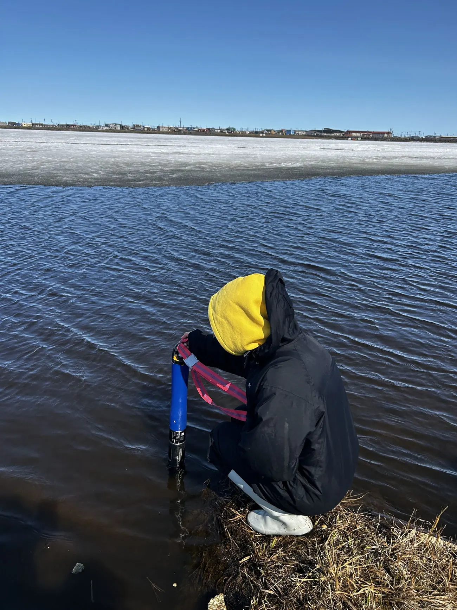

UNIVERSITY OF VIRGINIA
Geology and environmental science
Guest instruction in Fundamentals of Geology and Dynamics of Dryland and Tundra Ecosystems, with classroom discussions connecting Earth processes, changing landscapes, and field evidence.
TEACHING / MENTORING / FIELD SCIENCE
I want students to turn observations into testable questions, examine the evidence, and build their own explanations. Arctic fieldwork gives us memorable examples of why that process matters.

MY APPROACH
From a thaw probe to a laboratory experiment, I use field and hands-on observations to help students understand mechanisms, discuss uncertainty, and recognize both what a measurement reveals and what it does not.
“The thaw is much deeper near the road than just a few meters away!”
A student made this observation during field instruction for UVA's City Built on Thawing Ground studio, led by Leena Cho and Matthew Jull through the Arctic Design Group. The contrast helped connect frozen-ground concepts to infrastructure and direct measurement.

TEACHING EXPERIENCE
My teaching spans geology, environmental science, engineering, chemistry, and interdisciplinary field education, with in-person, online, and hybrid groups of approximately 13–68 students.
UNIVERSITY OF VIRGINIA
Guest instruction in Fundamentals of Geology and Dynamics of Dryland and Tundra Ecosystems, with classroom discussions connecting Earth processes, changing landscapes, and field evidence.
IḶISAĠVIK COLLEGE
In a hybrid General Chemistry I guest lecture, 13 students examined solute migration in frozen sediments and Arctic water chemistry, followed by hands-on measurements using an EXO water-quality sonde.
SKOLTECH
Co-instruction and teaching assistance for gas hydrates and permafrost courses, including laboratory methods, student assessments, and experimental interpretation. I also independently developed an interdisciplinary course on Russian culture.
Use thaw probing, snow, water and infrastructure to make physical processes tangible.
Turn observations into hypotheses, calculations, and comparisons with evidence.
Offer field, laboratory, data analysis, and modeling pathways that address different student circumstances.
LEARNING BY INVESTIGATING
I connect different disciplinary perspectives by giving students the same observation and encouraging them to investigate it through complementary tools.
Students compare two tundra sites with different active-layer depths. They examine snow, vegetation, and ground conditions; develop explanations; and calculate thaw depth from temperature records using a simplified Stefan model.
They then compare their estimates with measurements and identify processes that the simple model does not capture. The goal is not just a calculated answer but an informed understanding of why predictions differ.
An upper-level course I have designed in syllabus form, connecting ground ice, heat and mass transfer, hydrology, environmental change, and infrastructure. Students would investigate a permafrost question using field, laboratory, satellite, or modeling data and share their findings across disciplines.
MENTORSHIP
Students contribute to research at every stage, from carefully scoped data analysis to field planning, hypothesis development, publication, and collaboration with community partners.
UNDERGRADUATES
I use a four-week exploration of potential projects — geophysics, Arctic lagoons, snow remote sensing, and modeling — before students choose a direction, propose a method, and gradually assume greater responsibility.
GRADUATE RESEARCHERS
My mentoring has included collaborative fieldwork, data interpretation, coauthored publications, and dissertation reviews. I emphasize regular feedback, clear milestones, research ethics, and opportunities to lead research activities.
ARCTIC COLLABORATIONS
My work with Iḷisaġvik College students includes field measurements, lagoon data analysis, and accessible communication of observations. These are research contributions as well as learning activities, and are grounded in local questions and appropriate expectations about sharing findings. Partnership context ↗
My goal is for students to progress from observation to data, from data to mechanism, and ultimately from answering questions to asking their own.
I have co-mentored three PhD students, co-supervised four BSc and MSc students, and currently supervise three undergraduate permafrost researchers and three Iḷisaġvik College students working on Arctic lagoon questions.
I welcome collaborations that connect students with meaningful Arctic questions, new methods, and field or data-based research.